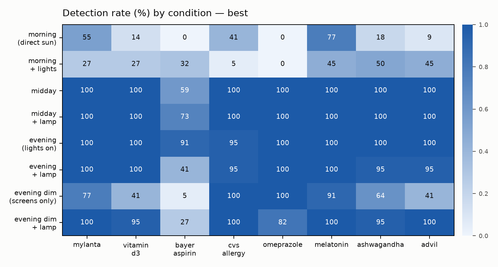

Assistive home-care robot · Raspberry Pi 5
Right medication.
On time. Safe at home.
MeSA 2.0 is a tabletop robot that recognizes medications, tracks whether they've been taken, watches for falls, answers questions by voice, and escalates to a caregiver when something's wrong — all running offline.
An assistive aid, not a medical device.
The problem
Living independently shouldn't mean living at risk.
For older adults and people managing complex prescriptions, three things go wrong most often: a missed dose, the wrong pill, and an unwitnessed fall. Existing solutions are either expensive, cloud-bound, or require the person to remember to use them. MeSA watches quietly and only speaks up when it matters.
What it does
Five things, working together.
-
01
Recognizes medications
Computer vision identifies each bottle and flags anything unfamiliar as a possible wrong medication.
-
02
Tracks doses taken
Removing and returning a bottle logs a timestamped "taken" event, visible on a live dashboard.
-
03
Detects falls
Real-time posture classification; prolonged lying triggers a spoken check-in.
-
04
Answers by voice
Ask what's next, whether a dose was taken, the date and time — or call for help, hands-free and offline.
-
05
Escalates to a caregiver
No response? A three-step escalation goes from a spoken check-in to a phone notification to a caregiver alert.
How it works
One small computer. One event loop.
A single Raspberry Pi runs vision and audio workers that publish events to one queue; a decision engine consumes them and drives compliance tracking, fall detection, and escalation. Everything is local — no cloud, no account, no data leaving the home.
USB cam ─▶ Vision (YOLOv8 detect · MediaPipe pose) ─┐
USB mic ─▶ Audio (Vosk STT · pyttsx3 TTS) ├─▶ Decision engine ─┬─▶ SQLite log
│ ├─▶ Live dashboard
└──────────────────────┴─▶ Caregiver alert
Demo
See it run.
The full walkthrough shows all five capabilities live: detection, dose logging, fall check-in, voice commands, and the caregiver escalation.
Results
Measured, not claimed.
Measured on real hardware, Aug 2026 — full evaluation data and per-frame results are in the open repository.
The research
The robot that measured its own blind spots.
MeSA's detector scored 0.953 on its held-out test set — then failed at 8 PM in its own room. Instead of hiding that, MeSA became the instrument: a voice-guided protocol where scripted placement makes ground truth free produced 1,728 labeled field evaluations across an 8-condition lighting grid, with zero manual annotation. Findings: detection collapses at both lighting extremes (direct sun is worse than near-darkness), which containers fail is set by their reflectance, a $10 LED lamp restores near-dark detection from 38–71% to 92–100% — and the "free" synthetic-data fix made things worse.

About
Built end to end by one student.
MeSA 2.0 is an independent engineering project: dataset collection and model training, an offline voice assistant, a real-time decision engine, and a robot built on a Raspberry Pi — designed, built, and tested end to end by one student, pair-programming with an AI assistant and backed by a very patient family.